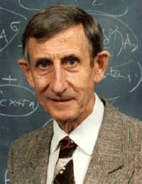
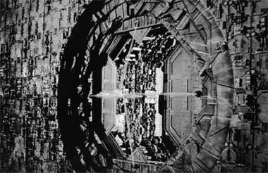
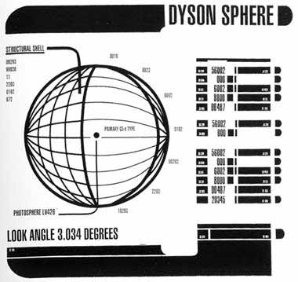

|

Texto de
Fernando Penteriche
Conceito
criado por Freeman Dyson e usado em Jornada j tem mais de 40 anos

|
 Nascido na Inglaterra em 1923, o fsico e educador Freeman Dyson conhecido por seu trabalho especulativo sobre civilizaes extraterrestres. Entre estes trabalhos est a teoria da "Esfera Dyson" (ou "Concha Dyson"), um conceito publicado por ele em 1959 e que foi explorado no episdio "Relics", do 6 ano da Nova Gerao.Seus pais eram msicos e compositores. Quando jovem Dyson estudou na Universidade de Cambridge, uma das mais conceituadas da Inglaterra, mostrando uma grande paixo pela matemtica. Em 1943, os estudos em Cambridge tiveram que ser interrompidos, pois Dyson foi convocado para combater na 2 Guerra pela Real Fora Area Britnica. Formado como bacharel em matemtica por Cambridge em 1945, Dyson veio para os Estados Unidos em 1947 para estudar fsica na Universidade Cornell, em Ithaca, Nova York, e depois Princeton. Dyson retornou para a Inglaterra em 1949 para ser pesquisador junto Universidade de Birminghan, mas foi chamado para ser professor de fsica na Universidade Cornell em 1951 e dois anos depois no Instituto de Estudos Avanados, IAS, o mesmo que abrigou Albert Einstein depois que ele abandonou a Europa e passou a trabalhar nos EUA. Freeman Dyson tornou cidado americano em 1957. Em uma vida inteiramente dedicada estudos de explorao e colonizao do Sistema Solar e alm, Dyson estudou maneiras de procurar evidncias de vida extraterrestre inteligente pelo cosmo. Ele escreveu diversos livros, incluindo "Disturbing the Universe" (1979), uma autobiografia; "Weapons and Hope" (1984); "Origins of Life" (1985) e "Infinito em Todas as Direes" (1988), recentemente publicado no Brasil.
 A esfera consistiria em uma concha de coletores solares em torno de uma estrela, e toda a energia coletada seria utilizada para criar um enorme habitat com uma quantidade inesgotvel de energia. Em nosso Sistema Solar, uma Esfera Dyson com um raio de 1 Unidade Astronmica (UA, o equivalente distncia mdia entre a Terra e o Sol, 150 milhes de km) teria uma superfcie de pelo menos 272 milhes de bilhes de km, em torno de 600 milhes de vezes o tamanho da superfcie de nosso planeta. A proposta original simplesmente assumia que tendo os coletores necessrios em volta da estrela para absorver sua luz, no seria necessrio construir uma esfera completa e fechada, como visto em "Relics". Junto com Ron Moore e a produo da Nova Gerao, esse tipo de engano comum por parte de muitos autores de fico-cientfica.  At hoje, nossos telescpios obviamente no localizaram nenhuma Esfera Dyson pelo espao afora, mas voc pode ler sobre trs estudos para a procura delas em http://www.seti-inst.edu/. |